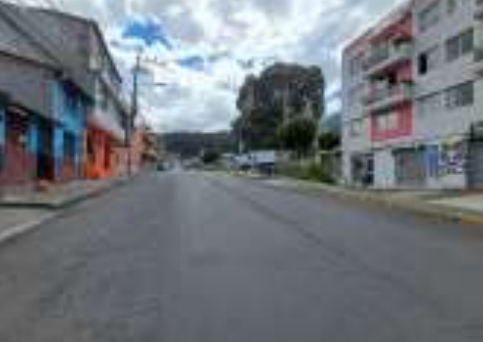
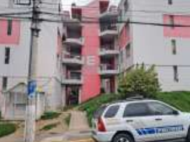
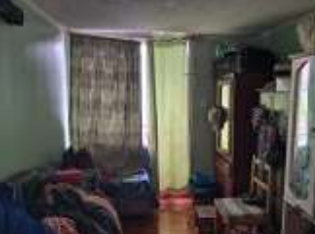
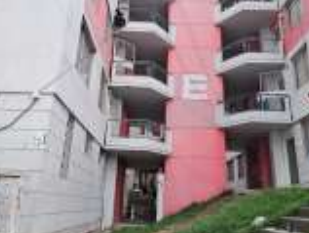
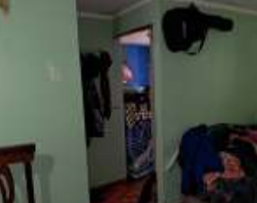
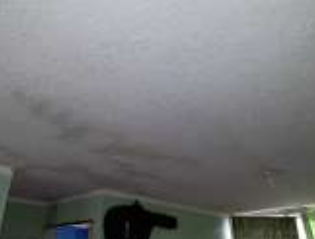
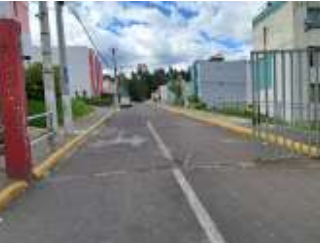
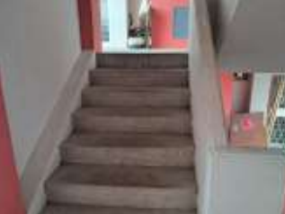

← volver al mapa
Departamento - EC-RJ-153896
EC-RJ-153896 · departamento · QUITO, Pichincha
★ Oferta destacada








Datos del remate
| Avalúo pericial | $29,026 |
| Tipo de bien | departamento |
| Área de construcción | 54.32 m² |
| Área de terreno | 31,546.12 m² |
| Cantón / Provincia | QUITO, Pichincha |
| Dirección / Sector | LA MENA. provincia: pichincha cantón: quito parroquia: la mena barrio / sector: hogar ancianos dirección: s18 río conuris clasificación de zona: (r) residencial – (rum-3) residencial urbano de media densidad tipo 3 |
| Señalamiento | Primer Señalamiento |
| Fecha de remate | 2026-08-28 |
| No. de proceso | 17233202307750 |
Análisis vs. mercado
| Avalúo por m² | $534/m² |
| Mediana de mercado en la zona | $867/m² |
| Descuento vs. mercado | 38.3% |
| Comparables usados | 75 |
| Radio de búsqueda | 2000 m |
| Puntaje | 81/100 |
Descripción completa del avalúo
departamento d50-e32 ubicado en el conjunto habitacional la mena.compuesto por:planta alta 2 (51,99 m²): sala, comedor, cocina, dos dormitorios y baño familiar.secadero e-32 en terraza (2,33 m²): un solo ambiente.uso actual: vivienda.edad aproximada: 14 años.
estructura: hormigón armado. cubierta: hormigón armado. mampostería: bloque enlucido, estucado y pintado. cielo raso: enlucido, chafado y pintado. pisos: cerámica. puertas: principal metálica; interiores de madera. ventanería: aluminio y vidrio. baños y grifería: económicos (marca edesa). muebles: mdf en cocina; dormitorios sin mobiliario fijo. instalaciones: hidrosanitarias y eléctricas empotradas.
provincia: pichincha cantón: quito parroquia: la mena barrio / sector: hogar ancianos dirección: s18 río conuris clasificación de zona: (r) residencial – (rum-3) residencial urbano de media densidad tipo 3
Límites: conjunto habitacional la mena (generales, según escrituras): norte: 173.75 m con quebrada sur: 158.60 m con calle río conuris este: 160.30 m con propiedad de aldeas sos oeste: 228.56 m con calle alonso bastidas departamento d50-e32 (planta alta 2, nivel 2905.40): norte: 7.66 m con área verde comunal y circulación peatonal comunal sur: 7.66 m con circulación peatonal comunal este: 6.45 m con planta alta 2 d50-e31 oeste: 6.50 m con planta alta 2 d50-f31 superior: 51.99 m² (planta alta 3 d50-e42) inferior: 49.63 m² (losa planta alta 1 d50-e22) secadero e-32 (nivel 2911.44): norte: 1.55 m con circulación peatonal comunal sur: 1.55 m con circulación peatonal comunal este: 1.50 m con secadero e-22 oeste: 1.50 m con secadero e-42
Clave catastral: 30908 47 001 006 003 002
Análisis de inversión
★ Buena oportunidadDepartamento con buen descuento (38%), 14 años de edad, acabados económicos pero funcionales.
A favor:
En contra:
Análisis elaborado a partir de la descripción del avalúo — no es asesoría legal ni financiera.
Esta ficha es una copia de lo publicado en el sitio oficial de remates
judiciales de la Función Judicial del Ecuador, para consulta — no
reemplaza el expediente judicial. remates.funcionjudicial.gob.ec no da
un link propio por remate, por eso se generó esta página aparte.
Antes de ofertar, el expediente debe revisarlo un abogado.